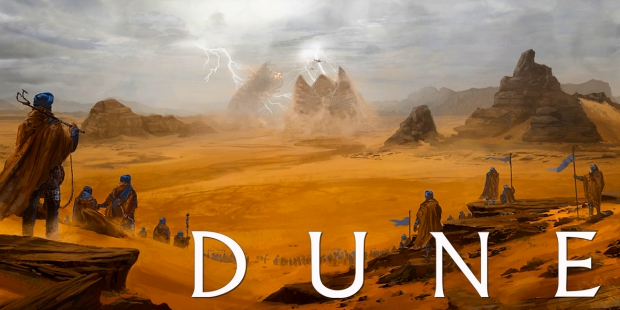
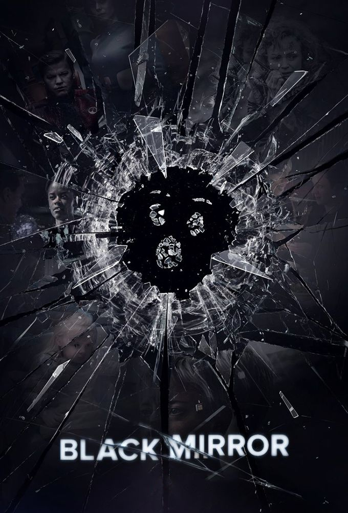

Logisticien de formation, je suis venus au Wagon pour apprendre à coder car c'est un domaine qui me passionne énormément. J'espert pouvoir me servir de ces compétences en développement informatique dans le milieu de la logistique
Curieux de tout, j'aime observer et apprendre tout ce qui touche aux nouvelles technologies, aux phénomènes Mondiaux (géopolique, économie etc) ainsi que les anciennes civilisations (notament leurs traditions, leurs cultures, leurs religion).
DUNE |
|
|  | Après avoir été trahi par l'Empereur Shaddam IV, Paul Atreides va venger sa famille et reconquérir la planète Dune, afin de retrouver le contrôle de l'Epice. |
Black Mirror |
|
|  | Cette anthologie de science-fiction explore un futur high-tech retors où se heurtent les plus belles innovations de l'humanité et ses plus bas instincts. |